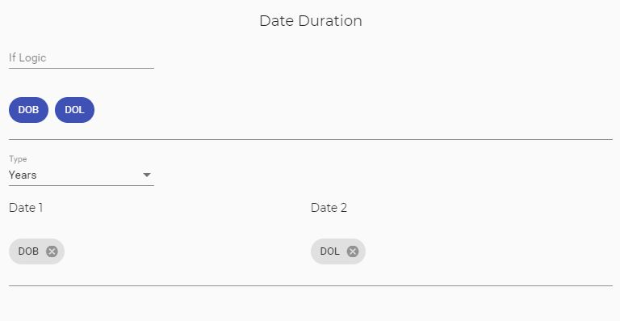
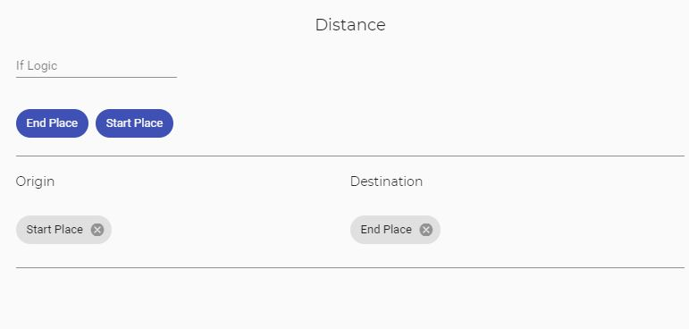
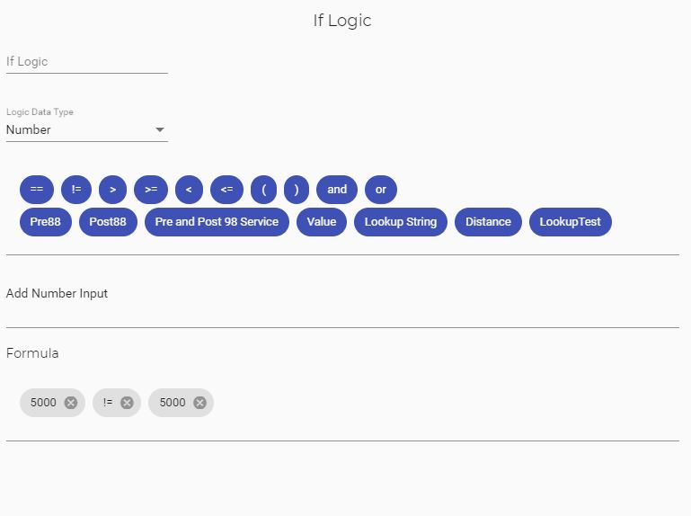
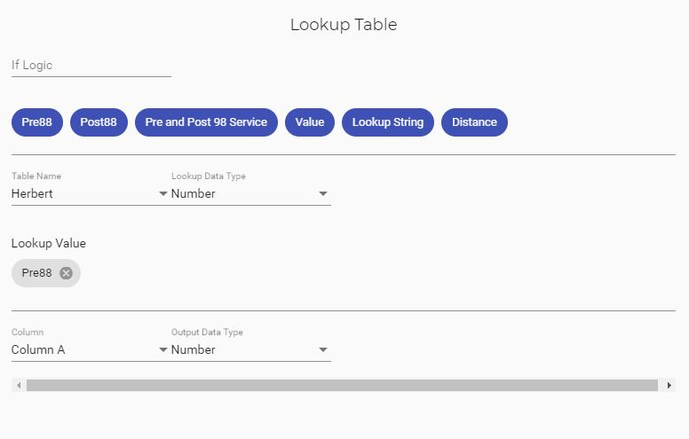
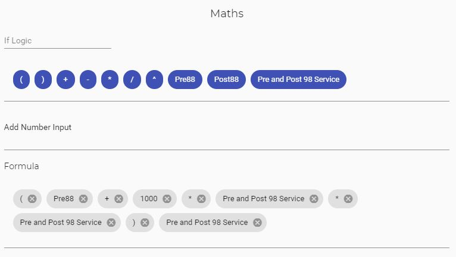

Overview
The Date Adjustment function enables the user to manipulate dates to either add/subtract a period of time or
adjust the date to a later or earlier date. The output of this function will be another date.
Builder Functions
The user will be presented with a list of chips with the other dates that are output from the calculation, these
chips can be dragged into the Date 1 or Date 2 fields when displayed, these will then use the date values stored
against these which have been calculated previously.
If you do not need to use a previously set value and want to add in a date the user will be shown a calendar icon
to set the date you need.
The user will be presented with a list of chips with the other Numbers that are output from the calculation,
these chips can be dragged into the Period field when displayed, this will add/subtract the relevant period to
the date and will use the number previously stored against that variable.
If you do not need to use a previously set value and want to add in a number the user will be able to add in a
numeric value as an input.
Function Descriptions
Add/Subtract
The Add and Subtract sub functions allow the user to adjust the date by a period of time. On selecting the
Adjustment type as this the user will be shown the below form.
The Start Date should be the date to be adjusted, the Period Adjustment section shows what period you would like
to adjust date by.
Period Type options are below these can be hard coded or a variable previously created for the period which
should be a decimal value:
-
Years Days – This value should be a decimal to 3dp the 3dps equate to the days and the full value is the years.
-
Years Months – This value should be a decimal to 2dp the 2dp equate to the months and the full value is the
years.
-
Years – This value should be an integer which will be the years.
-
Months – This value should be an integer which will be the month.
-
Days – This value should be an integer which will be the days.
Earlier/Later
The Earlier and Later function will return the earlier/later of the two dates added into the function.
First Day of Current Month
This function allows the user to return first day of the current month.
Last Day of Current Month
This function allows the user to return last day of the current month.
Today
This function allows the user to return the current date.
Overview
This function calculates the period between two dates that have been input into the function. The Adjustment Type
can be set to be a specific period to be returned and this function will return a Numeric value.

Builder Functions
The user will be presented with a list of chips with the other dates that are output from the calculation, these
chips can be dragged into the Date 1 or Date 2 fields when displayed, these will then use the date values stored
against these which have been calculated previously.
If you do not need to use a previously set value and want to add in a date the user will be shown a calendar icon
to set the date you need.
Function Descriptions
Types
The following Period Types will be accessible for the user:
-
Years – This value return an integer which will be the years
-
Years Fraction – This value return an numeric value that provides the full year and days divided by 365,
rounded to 2 decimal places
-
Months – This value return an integer which will be the months
-
Days – This value return an integer which will be the days
Overview
This function calculates the distance between two places and uses the google maps API to generate miles via
roads between two points. The user can find the number of miles between two place names or by post codes. This
also accounts for overseas locations however, they need to be accessible by road.

Builder Functions
The user will be presented with a list of chips with the other text values that are output from the calculation,
these
chips can be dragged into the Origin or Destination fields when displayed, these will then use the text values
stored
against these which have been calculated previously.
If you do not need to use a previously set value and want to add in a text the user can type whatever text in the
input box as required.
Overview
The If Logic function allows the user to create a formula to determine if a logic is true or false this logical
check will provide a true or false response dependant on the formula that has been passed through.
This true or false value can then be used on the top of each function in the If Logic input field to determine
when to use the function.

Builder Functions
An if logic function can only be used on one data type that is passed through so it can only do a logic on for
example two Number fields or two Date fields, this is to ensure that the user is comparing to fields in the same
data type.
So the function requires the user to input the data type that will be used in the drop down field.
After the user has selected the relevant data type, the function will present with a list of chips with the other
values based on that data type that are output from the calculation, these
chips can be dragged into the formula field when displayed for use within the function, these will then use the
relevant data fields values stored against these which have been calculated previously.
If you do not need to use a previously set value there will be an input field to add the relevant data type to
the formula and want to add in a the relevant value that is required.
In the formula field the user can move around the various inputs within the formula to reposition them where
required, this also works when adding in a chip to the field. If the user is adding in a value that is not a chip
this will be added to the end.
Function Descriptions
Operators
In order to build the formula the function requires various operators in order to determine if the if logic
condition is correct, please see below a list of available operators and their function, please note these should
be used within the formula in the correct place, in the event that they are not in the correct place the
calculation will output false.
-
== - Equal
-
!= - Not Equal
-
> - Greater Than
-
>= - Greater Than or Equal To
-
< - Less Than
-
<= - Less Than or Equal To
-
( - Open Bracket for Multiple Conditions
-
) - Close Bracket for Multiple Conditions
-
and - And for Multiple Conditions
-
or - Or for Multiple Conditions
Overview
This function enables the calculation to lookup a table from Lookup Maintenance to return a value like the
VLOOKUP function in Excel. The Lookup Maintenance function builds the table and stores it against your user
profile. The table can then be used in this function by selecting the table required.

Builder Functions
An if Lookup Table function can only be used on one data type that is passed through so it can do a lookup on for
example a Number fields or a Date field, this is to ensure that the function can find the correct value based on
the data type.
So the function requires the user to input the Lookup Data Type that will be used in the drop down field.
After the user has selected the relevant data type, the function will present with a list of chips with the other
values based on that data type that are output from the calculation, these
chips can be dragged into the Lookup Value field when displayed for use within the function, these will then use
the
relevant data fields values stored against these which have been calculated previously.
If you do not need to use a previously set value there will be an input field to add the relevant data type to
the Lookup Value and want to add in a the relevant value that is required.
Function Descriptions
Table Name
The name of the available Lookup Table names in Lookup Maintentence, see the Lookup Table Maintenance section to
find a
list of available factor tables to use.
Lookup Data Type
This will be the data type required to do the lookup, this needs to be set to ensure that the function can find
the relevant lookup value.
Lookup Value
This is the value that the function will use to lookup the table in lookup maintenance. This will always lookup
the first column in the table to find the value.
Columns
This is the column to return from the lookup table, this will be a list of the column names on the Lookup
Maintenance Table, please select the column where the value you with to return is held.
Output Data Type
This is the output data type to define the return data type from the factor table which can then be used in other
functions. So the user may look up a date in the first column but will return a number against that the number
can then be used as that data type else where within the calculation.
Overview
The Maths function allows the user to create a formula to calculate a Number value based.

Builder Functions
The user will be presented with a list of chips with the other Number values that are output from the
calculation,
these chips can be dragged into the Formula field when displayed, these will then use the Number values
stored
against these which have been calculated previously.
If you do not need to use a previously set value and want to add in a Numeric value in the Add Number input box
as required and by clicking away this will add the value into the formula at the end.
In the formula field the user can move around the various inputs within the formula to reposition them where
required, this also works when adding in a chip to the field. If the user is adding in a value that is not a chip
this will be added to the end.
Function Descriptions
Operators
In order to build the formula the function requires various operators in order to calculate the mathmatical
formula, please see below a list of available operators and their function, please note these should
be used within the formula in the correct place, in the event that they are not in the correct place the
calculation will output 0.
-
( - Open Bracket for Multiple Calculations
-
) - Close Bracket for Multiple Calculations
-
+ - Add
-
- - Subtract
-
* - Mulitple
-
/ - Divide
-
^ - Power